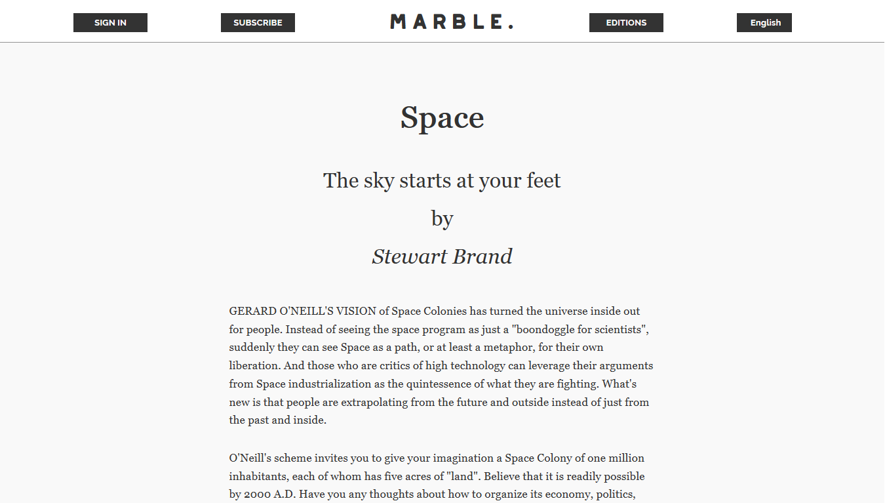
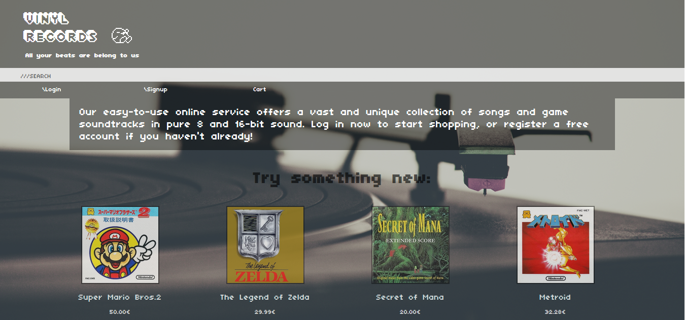
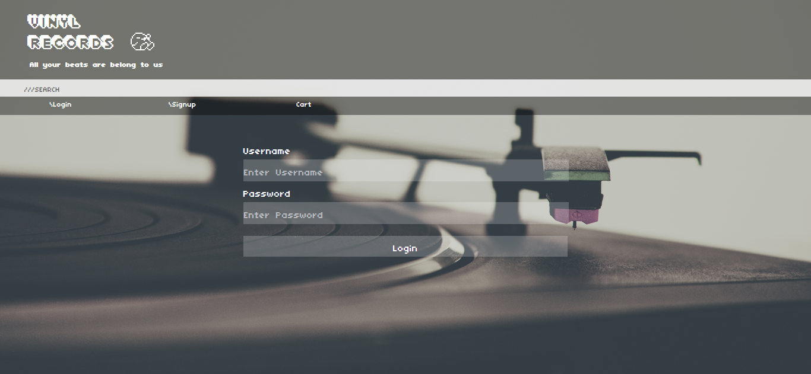
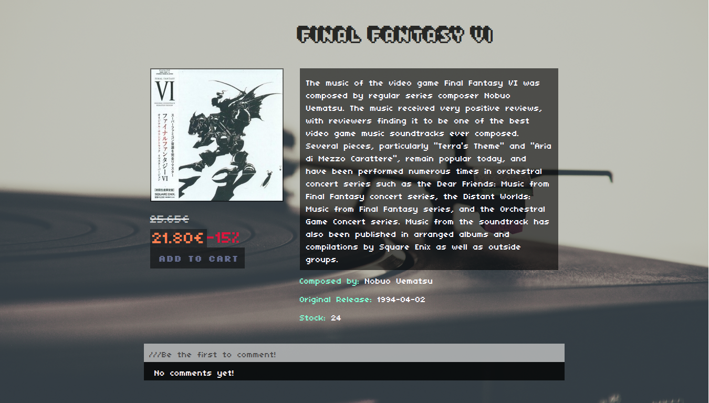
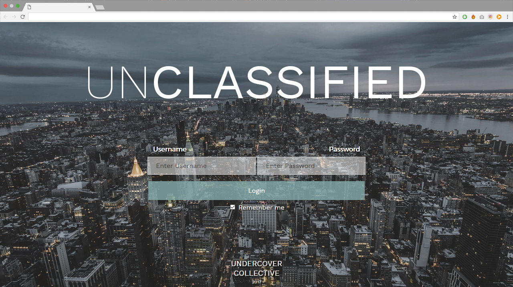
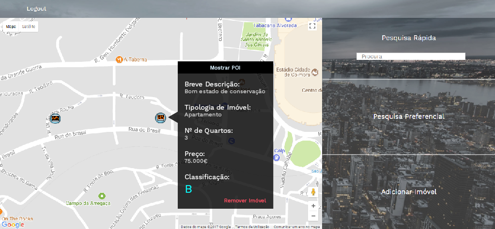
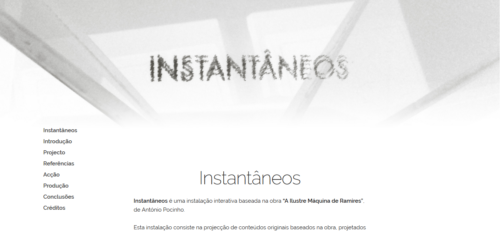
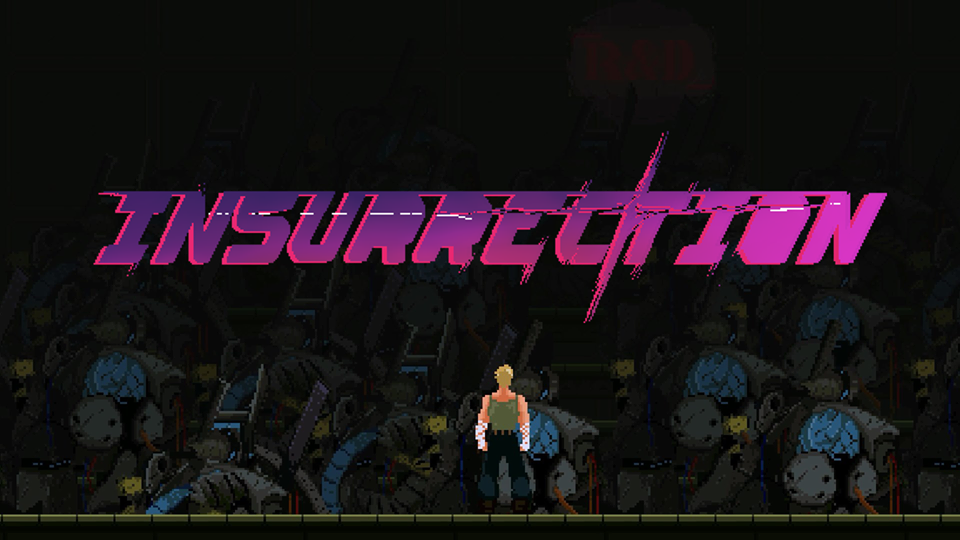
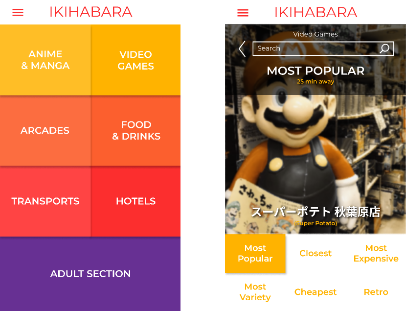
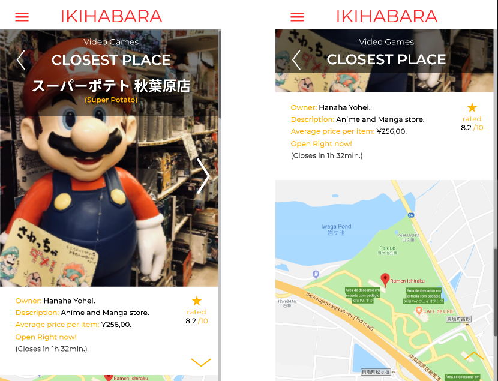

Uma revista online baseada no "Whole Earth Catalog", realizada no âmbito da cadeira de "Projeto 3" da licenciatura em Design e Multimédia da Universidade de Coimbra. Implementada com recurso a "October CMS" e CSS Grid.

A revista é bilingue, disponível em português e inglês. A edição criada contém 15 artigos e foram criadas uma versão web e uma versão impressa. A versão impressa foi paginada pelos meus colegas de grupo, Mário Abrantes e Inês Dias, enquanto a parte web foi inteiramente implementada por mim.
Vinyl Records

Uma loja de discos vinis fictícia, realizada no âmbito da cadeira de "Sistemas Informáticos" da licenciatura em Design e Multimédia da Universidade de Coimbra. Implementada com recurso a PHP, MySQL e CSS Grid.

Este foi um trabalho de grupo, realizado por mim e por Beatriz Araújo. Ambos participámos nas diferentes fases do projeto, desde a criação de mockups à implementação dos mesmos.

Tanto eu como a Beatriz somos fãs de uma estética retro e de pixel art e, por este motivo, decidimos criar uma loja de vinis de bandas sonoras de jogos clássicos, aludindo a esta estética no design do site.
unClassified

Uma aplicação de apoio a agentes imobiliários criada no âmbito da cadeira de "Engenharia de Software" da licenciatura em Design e Multimédia da Universidade de Coimbra.

Os meus cargos incluíram vice-gestor de projeto, developer front-end e fui encarregue da criação de mockups para o documento de requisitos.
Instantâneos

Uma instalação interativa realizada por mim, por Nuno Martins e por Luís Azevedo no âmbito da cadeira de "Projeto 4" da licenciatura em Design e Multimédia da Universidade de Coimbra.
O meu papel foi a criação deste site de documentação, a criação da animação utilizada na instalação e a programação relativa à instalação em si, que incluí Arduíno e Processing.
Uma animação baseada na "short story" de Franz Kafka, "The Sudden Walk".
entre mundos
Uma dream sequence ritualística que explora a sobreposição de animação 2D com stop motion.
Instantâneos
Uma interpretação do capítulo "Instantâneos" da obra "A Ilustre Máquina de Ramires" de António Pocinho, utilizada como base para uma instalação interativa baseada na mesma obra.
Insurrection

Um "cinematic platformer" num mundo distópico, em desenvolvimento por 8-bit Forgers. O meu cargo é Pixel Artist e Animador, estando encarregue da criação de diferentes conteúdos relacionados com a parte visual do jogo, em conjunto com o resto da equipa de arte.
Um jogo 2D de ação pixel art, cujo objetivo é derrotar os vários "Bosses" que vão aparecendo. Um trabalho de grupo realizado por mim, por António Fontes e por Francisco Roma no âmbito da cadeira de "Multimédia" da licenciatura em Design e Multimédia da Universidade de Coimbra.
O meu papel foi a criação do conceito, o design de gameplay, toda a implementação em HTML, CSS e javascript e a criação da personagem principal e do primeiro background.
Um logótipo dinâmico baseado no trabalho de Sebastião Rodrigues. Realizado no âmbito da cadeira de "Design II" da licenciatura em Design e Multimédia da Universidade de Coimbra.
Ciclo de Conversas
Identidade criada para o "Ciclo de Conversas", um conjunto de palestras anuais sobre Design e Multimédia. Realizado no âmbito da cadeira de "Design I" da licenciatura em Design e Multimédia da Universidade de Coimbra.
Ikihabara

Design de uma aplicação para turistas em Akihabara, Japão. Trabalho de Grupo realizado por mim, por Beatriz Araújo e por Luís Azevedo no âmbito da cadeira de "Design de Meios de Interação" da licenciatura em Design e Multimédia da Universidade de Coimbra.

Foi criado um demo interativo em Figma, simulando as várias interações possíveis. O meu papel incluiu o design da maior parte dos ecrãs em papel, como protótipo de baixa fidelidade, "layout" da aplicação e "user testing" com recurso ao UEQ (User Experience Questionaire).